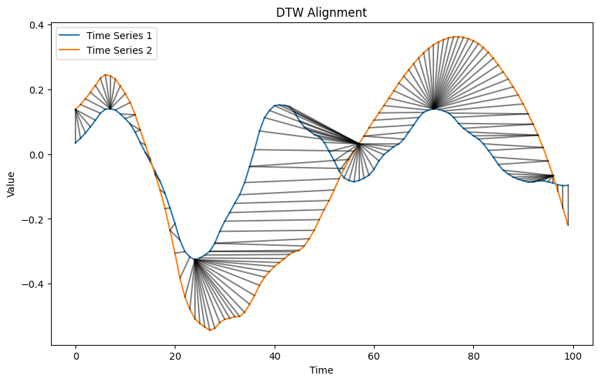
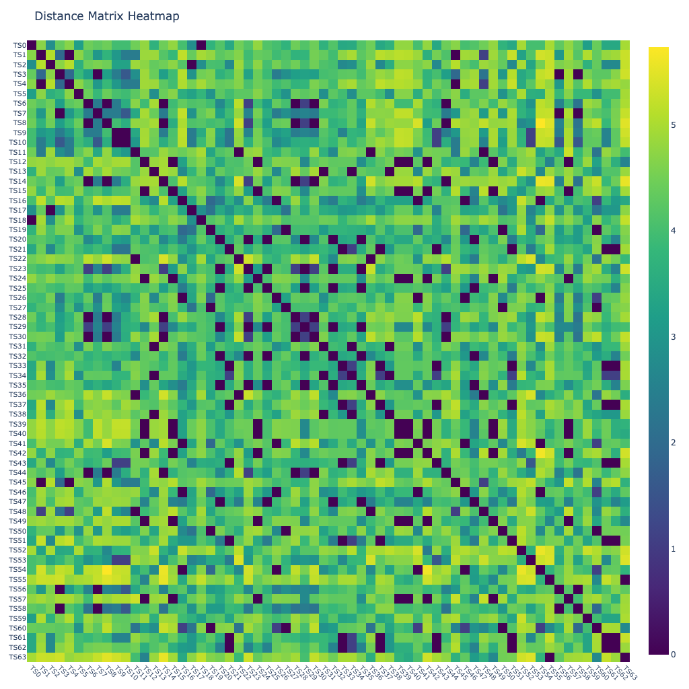
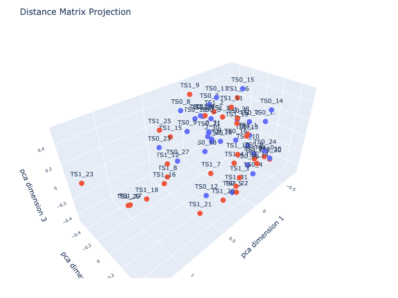
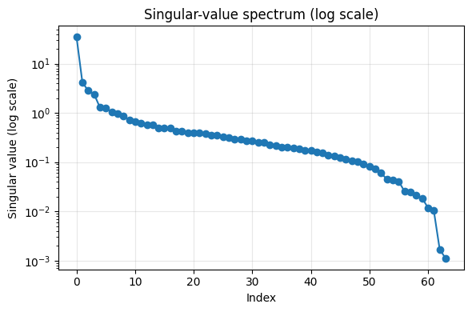
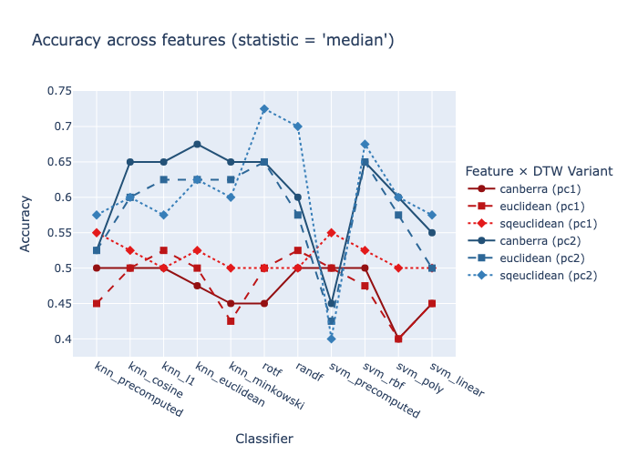
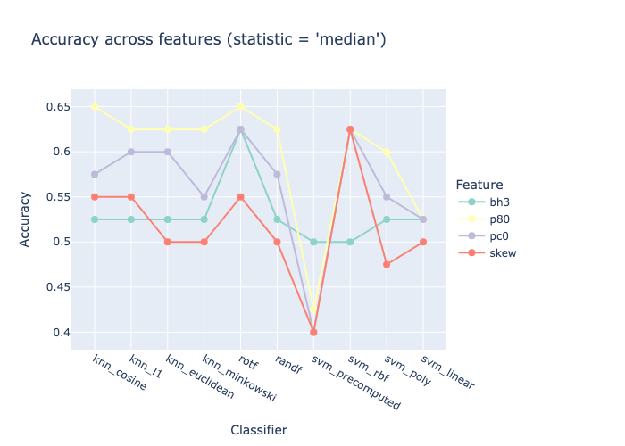

from fhemb.utils.cutils import depict_DTW, calc_dtw_accuracy, prepare_data, plot_dm_heatmap, plot_dm_projection, svd_dmatrix, depict_accuracyDynamic Time Warping
from nbdev_fhemb.wreconstruction_ex import emb_prj_decomp_rec1DTW Alignment
is based on distance metrics
from scipy.spatial.distance import (
euclidean,
cityblock,
cosine,
mahalanobis,
sqeuclidean,
chebyshev,
minkowski,
braycurtis,
canberra,
correlation,
jaccard,
hamming
)
NoteDistance metrics for DTW — What they measure
DTW can operate with different point‑wise distance metrics, each defining how local differences between two time‑series samples are evaluated. Choosing a metric determines what “local similarity” means inside DTW, allowing the clustering to emphasize amplitude, shape, correlation, or categorical differences depending on the application.
NoteChoosing a Distance Metric for DTW
Different metrics emphasize different aspects of local similarity inside DTW:
- euclidean / sqeuclidean - best when absolute amplitude differences matter
- cityblock / minkowski - robust to outliers; good for piecewise‑linear or sparse changes
- cosine / correlation - focus on shape rather than magnitude; useful when scaling varies
- chebyshev - highlights the single largest deviation; good for threshold‑type signals
- braycurtis / canberra - emphasize relative changes; useful when values vary across orders of magnitude
- hamming / jaccard - for categorical or binary time series
- mahalanobis - accounts for covariance structure when dimensions are correlated
Selecting a metric determines whether DTW prioritizes amplitude, shape, relative variation, or categorical differences, allowing the clustering to match the structure of your data.
DTW alignment between two time series
depict_DTW(
emb_prj_decomp_rec1.get_df_ts_subjs('pc0')['pcomponents_ts']['subj50'][:100],
emb_prj_decomp_rec1.get_df_ts_subjs('pc0')['pcomponents_ts']['subj51'][:100],
dist=euclidean
)
NoteDTW alignment of embeddings - What it shows
DTW alignment reveals similarity even if events occur a bit earlier or later across synchronized time series.
DTW alignment between multiple time series
A non‑clustered distance‑matrix heatmap shows the raw pairwise DTW distances between synchronized time series, in their original ordering.
from nbdev_fhemb.module_functions_ex import Xdmplot_dm_heatmap(
Xdm, # data matrix (64 x timesteps)
alignment_type='fastdtw', # 'dcor', 'fastdtw'(euclidean), 'tslearn_dtw'(euclidean), 'soft_dtw'(sqeuclidean), 'soft_dtw_div'
dist=cosine, # distance metric function used inside fastdtw
radius=10, # refinement window size in fastdtw
normalize='log', # normalization method for distance matrix
n_jobs=8, # number of jobs for parallelization
base_size=16 # base pixel size
)
NoteNon‑clustered heatmap diagnostics (Synchronized time series)
It helps assess whether the dataset contains meaningful similarity structure before clustering:
- Uniform appearance (no visible structure): All time series behave similarly or differences are weak; clustering may not reveal strong groups.
- Clear stripes (horizontal or vertical): A specific time series is consistently different from all others — an outlier or atypical subject/channel.
- Gradients or smooth transitions along the diagonal: The ordering of the time series reflects a systematic progression (e.g., subjects sorted by condition, intensity).
- Patchy or noisy texture: Indicates heterogeneous data quality or inconsistent preprocessing across time series.
- Large global brightness: Distances are high overall — time series differ strongly; normalization or scaling may need adjustment.
- Symmetry check: The matrix must be symmetric; deviations indicate metric or implementation issues.
This view reveals whether synchronized time series naturally separate into similarity groups, contain outliers, or require preprocessing adjustments before clustering.
CautionDiagonal values
When the radius is very small (e.g., \(\ll 10\)), FastDTW restricts the warping window too aggressively. This can force suboptimal alignments, causing unusually large diagonal values in the local cost matrix. These spikes are an artefact of the FastDTW approximation rather than properties of the underlying data.
ImportantLandmark embedding
The DTW distance matrix is computed over embedded time series (primary embedding). A row of this matrix defines a landmark embedding: the vector of DTW dissimilarities from a given embedded time series to all other embedded time series. Thus, the landmark embedding is a second‑order embedding determined jointly by the primary embedding and by the DTW configuration (alignment_type, dist, radius, normalize).
DTW alignment geometry
Distance matrix projection using a dimensionality reduction method
provides a geometric view of how the synchronized time series relate to each other
plot_dm_projection(
Xdm[:32], Xdm[32:], # data matrices for two groups (32 x 64)
alignment_type='fastdtw', # alignment method for distance matrix computation
dist=cosine, # distance metric function used inside fastdtw
projection='pca', # projection method for dimensionality reduction ('pca', 'tsne', 'mds')
transformation='minmax', # to transform distances into similarities for PCA
normalize='log', # normalization method for distance matrix
n_jobs=8, # number of jobs for parallelization
dimensions=3, # number of dimensions of the projection
)
NoteDistance-matrix projection diagnostics
Look for:
- Compact groups → evidence of cluster structure in the underlying time series
- Overlapping or diffuse clouds → weak or ambiguous cluster boundaries
- Isolated points → outlier time series with atypical temporal behavior
- Arcs, curves, or gradients → continuous progression rather than discrete clusters
- Changes across preprocessing steps → reveals whether normalization or filtering improves separability
- Metric comparison → different distance metrics produce different geometries; projection shows how strongly
- A sanity check: it shows whether the DTW geometry contains meaningful structure before applying any clustering algorithm.
Intrinsic dimensionality of a distance matrix via singular value decomposition (SVD)
Calculate singular-value spectrum
U, S, Vt = svd_dmatrix( # returns U, S, Vt matrices from SVD of the distance matrix
Xdm, # data matrix (64 x 64)
alignment_type='fastdtw', # alignment method for distance matrix computation
dist=cosine, # distance metric function used inside fastdtw
radius=2, # refinement window size in fastdtw
transformation='minmax', # to transform distances into similarities for SVD
normalize='log', # normalization method for distance matrix
n_jobs=8 # number of jobs for parallelization
)
Notesvd_matrix
svd_matrix(X, alignment_type, gamma, transformation, normalize, n_jobs)
Computes a low‑rank decomposition of a distance‑based similarity matrix using Singular Value Decomposition (SVD).
This function helps analyze the structure of the similarity geometry and estimate the intrinsic dimensionality of the dataset.
Pipeline 1. Compute pairwise distances using alignment_type (e.g., fastdtw).
2. Convert distances into similarities using transformation (e.g., gauss, invert, minmax).
3. Optionally normalize time series using normalize.
4. Apply SVD to the resulting similarity matrix \(\qquad K = U \Sigma V^\top\)
Returns - U — left singular vectors
- S — singular values
- Vt — right singular vectors
Interpretation - Singular values S quantify how much structure each latent dimension explains.
- Their decay provides a practical estimate of the intrinsic dimension of the similarity space:
- sharp drop → low intrinsic dimension
- gradual decay → diffuse or noisy structure
- Conceptually similar to PCA, but applied directly to the similarity matrix rather than centered feature data.
Use cases - Inspecting geometric structure before embedding
- Choosing the number of PCA/MDS components
- Detecting noise vs. signal in distance‑based representations
- Low‑rank smoothing or compression of similarity matrices
Visualize the singular-value spectrum
The vector S contains the singular values returned by the SVD. By convention, these values are sorted in descending order, so the first one corresponds to the dominant singular value and subsequent entries decrease monotonically.
import matplotlib.pyplot as pltplt.figure(figsize=(6, 4))
plt.semilogy(S, marker='o', linewidth=1.5)
plt.xlabel("Index")
plt.ylabel("Singular value (log scale)")
plt.title("Singular-value spectrum (log scale)")
plt.grid(True, alpha=0.3)
plt.tight_layout()
plt.show()
NoteIntrinsic Dimensionality
The singular-value spectrum exhibits a sharp decay after the first four components. This indicates that the matrix is well-approximated by a rank‑4 model, and that the intrinsic dimensionality of the similarity structure is approximately four. Components beyond the fourth lie near the noise floor and contribute minimally to the geometry of the space.
Classification Accuracy
of a binary classification problem. A class contains landmark embeddings (rows in a DTW distance matrix) of time series that are synchronized, i.e., belong to the same segment the underlying
Datasourceobject.
NoteClassification accuracy
Accuracy quantifies how well a binary classifier distinguishes between two classes of synchronized time‑series embeddings. Each class contains landmark embeddings of time series that originate from the same segment of the underlying Datasource object. High accuracy indicates that the embeddings preserve class‑specific temporal structure strongly enough for a simple classifier to separate the two groups.
NoteLandmark embeddings
Landmark embeddings arise from a two‑stage process:
- Primary embeddings (
features) are aligned byalignment_type/dtw_typeDTW wrt. a distance metricsdist/dtw_filters. - The resulting alignment defines the geometric mapping used to construct the landmark embeddings.
The primary embedding features
emb_prj_decomp_rec1.features{'percentiles_ts': ('p20', 'p80'),
'binheights_ts': ('bh1', 'bh2', 'bh3'),
'pcomponents_ts': ('pc0', 'pc1', 'pc2'),
'features_ts': ('skew', 'kurtosis')}Calculate and store
Soft DTW
uses the squared Euclidean distance as a similarity metric when computing the distance matrix
dirname_soft = 'dtw_accuracy' + '_emb_prj_decomp_rec1' + '_soft_minmax'for embedding, features in emb_prj_decomp_rec1.features.items(): # iterate over all features of the EmbeddingCollection object
for feature in features: #
print(f"Embedding: {embedding}, Feature: {feature}")
X, y = prepare_data( # prepare the matrix X and label vector y for the two groups
emb_prj_decomp_rec1.get_df_ts_subjs(feature)[embedding].iloc[:500].T, # first 500 samples for group 0
emb_prj_decomp_rec1.get_df_ts_subjs(feature)[embedding].iloc[500:].T # last 500 samples for group 1
)
print(f"Shape: {X.shape}") # matrix (n_samples x n_dataframes)
filename=calc_dtw_accuracy( # compute the classification accuracy across multiple classifiers and primary embeddings, save results to Excel file and return the filename
X[y==0], # group 0
X[y==1], # group 1
dirname=dirname_soft, # directory in which the results Excel file will be stored
dtw_type='soft_dtw', # alignment method for distance matrix computation
normalize='minmax', # normalization method for distance matrix
feature=feature, # feature name for labeling the results
random_states=10 # number of random states for train/test splits in classification
)
print(f"Saved results to: {filename}")Embedding: percentiles_ts, Feature: p20
Shape: (64, 500)Saved results to: /Users/radned/Projects/ttsembedding/dtw_accuracy_emb_prj_decomp_rec1_soft_minmax/acc_summ_p20.xlsx
Embedding: percentiles_ts, Feature: p80
Shape: (64, 500)Saved results to: /Users/radned/Projects/ttsembedding/dtw_accuracy_emb_prj_decomp_rec1_soft_minmax/acc_summ_p80.xlsx
Embedding: binheights_ts, Feature: bh1
Shape: (62, 500)Saved results to: /Users/radned/Projects/ttsembedding/dtw_accuracy_emb_prj_decomp_rec1_soft_minmax/acc_summ_bh1.xlsx
Embedding: binheights_ts, Feature: bh2
Shape: (62, 500)Saved results to: /Users/radned/Projects/ttsembedding/dtw_accuracy_emb_prj_decomp_rec1_soft_minmax/acc_summ_bh2.xlsx
Embedding: binheights_ts, Feature: bh3
Shape: (64, 500)Saved results to: /Users/radned/Projects/ttsembedding/dtw_accuracy_emb_prj_decomp_rec1_soft_minmax/acc_summ_bh3.xlsx
Embedding: pcomponents_ts, Feature: pc0
Shape: (64, 500)Saved results to: /Users/radned/Projects/ttsembedding/dtw_accuracy_emb_prj_decomp_rec1_soft_minmax/acc_summ_pc0.xlsx
Embedding: pcomponents_ts, Feature: pc1
Shape: (64, 500)Saved results to: /Users/radned/Projects/ttsembedding/dtw_accuracy_emb_prj_decomp_rec1_soft_minmax/acc_summ_pc1.xlsx
Embedding: pcomponents_ts, Feature: pc2
Shape: (64, 500)Saved results to: /Users/radned/Projects/ttsembedding/dtw_accuracy_emb_prj_decomp_rec1_soft_minmax/acc_summ_pc2.xlsx
Embedding: features_ts, Feature: skew
Shape: (64, 500)Saved results to: /Users/radned/Projects/ttsembedding/dtw_accuracy_emb_prj_decomp_rec1_soft_minmax/acc_summ_skew.xlsx
Embedding: features_ts, Feature: kurtosis
Shape: (64, 500)Saved results to: /Users/radned/Projects/ttsembedding/dtw_accuracy_emb_prj_decomp_rec1_soft_minmax/acc_summ_kurtosis.xlsxFastDTW
uses various distance metrics as a similarity metric when computing the distance matrix
dirname_fast = 'dtw_accuracy' + '_emb_prj_decomp_rec1' + '_fast_minmax'for embedding, features in emb_prj_decomp_rec1.features.items(): #
for feature in features: #
if feature in ['pc1', 'pc2']: # iterate over this list of features of the EmbeddingCollection object
print(f"Embedding: {embedding}, Feature: {feature}")
X, y = prepare_data( # prepare the matrix X and label vector y for the two groups
emb_prj_decomp_rec1.get_df_ts_subjs(feature)[embedding].iloc[:500].T, # first 500 samples for group 0
emb_prj_decomp_rec1.get_df_ts_subjs(feature)[embedding].iloc[500:].T # last 500 samples for group 1
)
print(f"Shape: {X.shape}") # matrix (n_samples x n_dataframes)
filename=calc_dtw_accuracy( # compute the classification accuracy across multiple classifiers and primary embeddings, save results to Excel file and return the filename
X[y==0], # group 0
X[y==1], # group 1
dirname=dirname_fast, # directory in which the results Excel file will be stored
dtw_type='fastdtw', # alignment method for distance matrix computation
normalize='minmax', # normalization method for distance matrix
radius=1, # refinement window size in fastdtw (only used for fastdtw)
feature=feature, # feature name for labeling the results
random_states=10 # number of random states for train/test splits in classification
)
print(f"Saved results to: {filename}")
else:
print(f"Skipping Embedding: {embedding}, Feature: {feature} for fastdtw")Skipping Embedding: percentiles_ts, Feature: p20 for fastdtw
Skipping Embedding: percentiles_ts, Feature: p80 for fastdtw
Skipping Embedding: binheights_ts, Feature: bh1 for fastdtw
Skipping Embedding: binheights_ts, Feature: bh2 for fastdtw
Skipping Embedding: binheights_ts, Feature: bh3 for fastdtw
Skipping Embedding: pcomponents_ts, Feature: pc0 for fastdtw
Embedding: pcomponents_ts, Feature: pc1
Shape: (64, 500)Saved results to: /Users/radned/Projects/ttsembedding/dtw_accuracy_emb_prj_decomp_rec1_fast_minmax/acc_summ_pc1.xlsx
Embedding: pcomponents_ts, Feature: pc2
Shape: (64, 500)Saved results to: /Users/radned/Projects/ttsembedding/dtw_accuracy_emb_prj_decomp_rec1_fast_minmax/acc_summ_pc2.xlsx
Skipping Embedding: features_ts, Feature: skew for fastdtw
Skipping Embedding: features_ts, Feature: kurtosis for fastdtwRetrieve and visualize
Accuracy of multiple classifiers on various landmark embeddings
COLUMNS_FILTER=[
'knn_precomputed',
'knn_cosine',
'knn_l1',
'knn_euclidean',
'knn_minkowski',
'rotf',
'randf',
'svm_precomputed',
'svm_rbf',
'svm_poly',
'svm_linear'
]depict_accuracy( # visualize the `statistics` of the classification accuracy of multiple classifiers (`column_filter`) across `features` and `dtw_filter`
dirname_fast, # directory from which the results are loaded
features=['pc2', 'pc1'], # the features of the primary embeddings for which the accuracy will be visualized
statistics='median', # statistic to aggregate accuracy across multiple random states ('median', 'mean', 'std', 'iqr')
dtw_filter=[ # list of DTW alignment distance metrics to include in the visualization
'euclidean',
'sqeuclidean',
'canberra'
],
columns_filter=COLUMNS_FILTER, # list of classifier columns to include in the visualization (e.g., ['knn_precomputed', 'svm_rbf'])
verbose=True # for debugging
);
depict_accuracy( # visualize the `statistics` of the classification accuracy of multiple classifiers (`column_filter`) across `features`
dirname_soft, # directory from which the results are loaded
features=['p80', 'bh3', 'pc0', 'skew'], # the features of the primary embeddings for which the accuracy will be visualized
statistics='median', # statistic to aggregate accuracy across multiple random states ('median', 'mean', 'std', 'iqr')
columns_filter=COLUMNS_FILTER, # list of classifier columns to include in the visualization (e.g., ['knn_precomputed', 'svm_rbf'])
verbose=True # for debugging
);